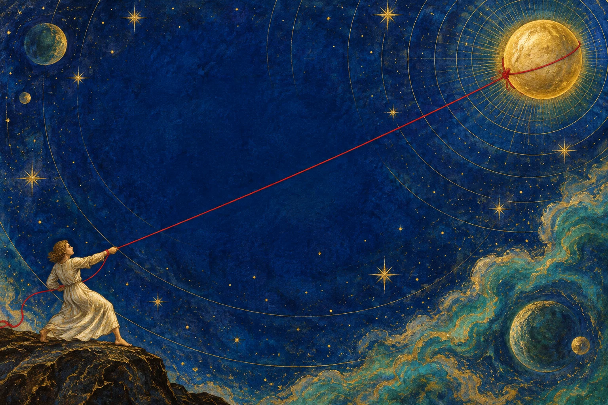
¿Busco a Dios… o una manera de garantizar lo que deseo?
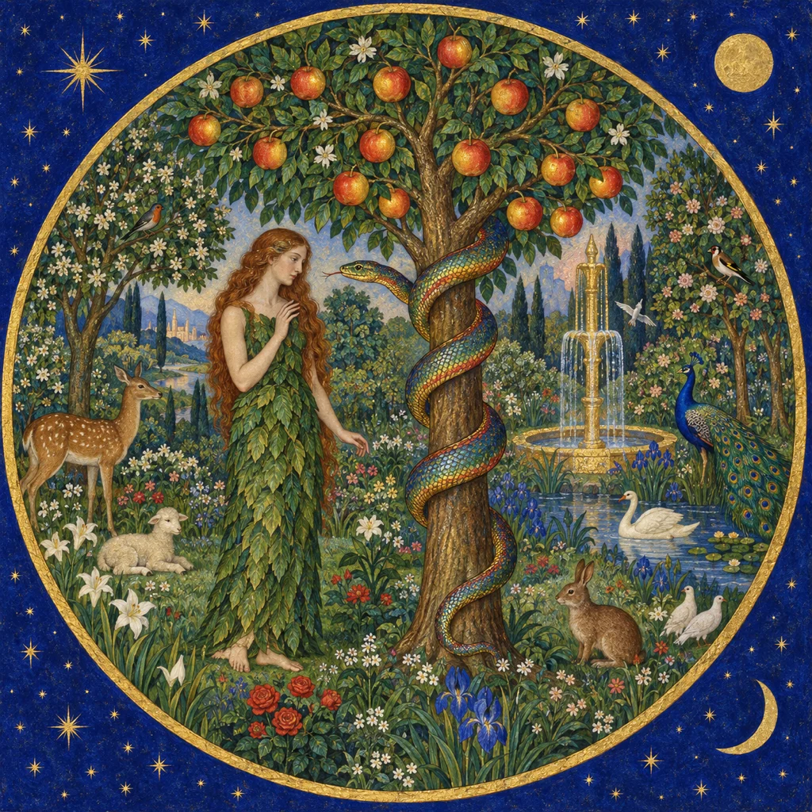
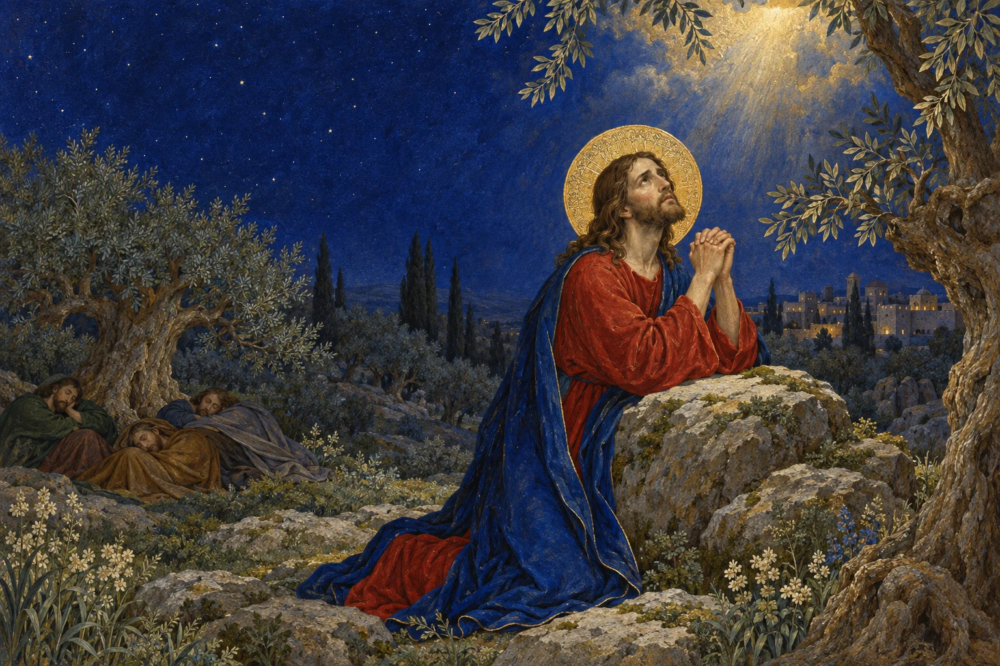
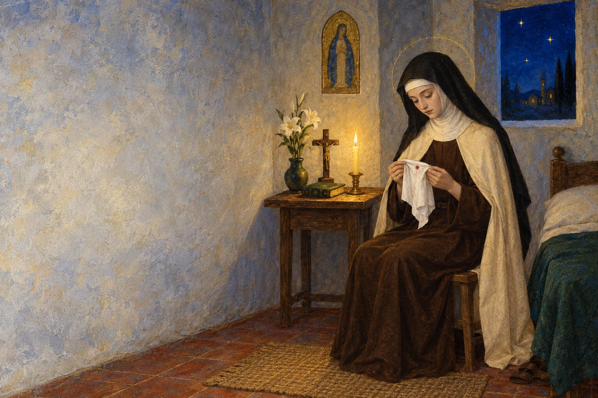
es profundamente humano.
Buscamos una explicación, una práctica, una promesa…
¿Confianza… o un control más sofisticado?
«Si conozco la clave, quizá pueda asegurar mi vida.»
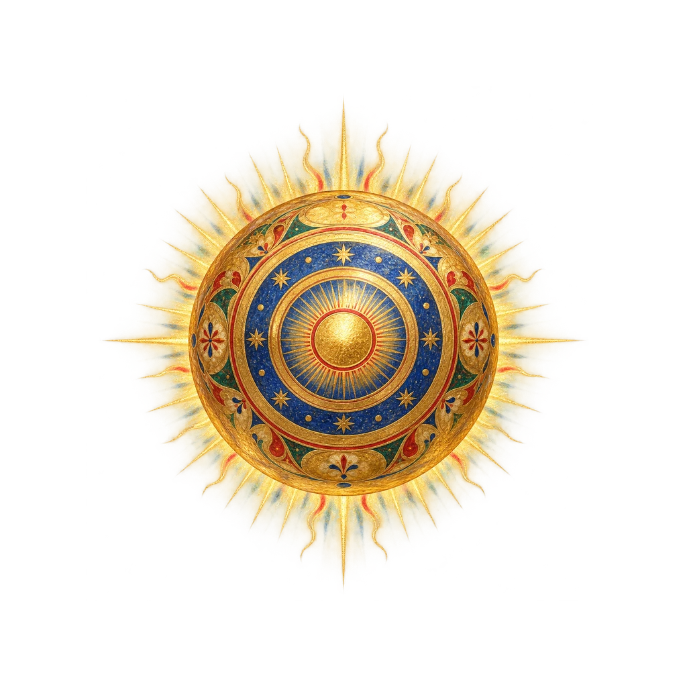
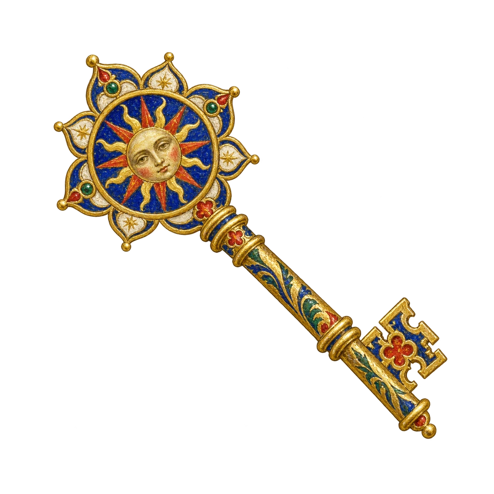
Génesis 3,1–6
«¿Conque Dios os ha dicho que no comáis de ningún árbol del jardín?»
Gn 3,1
«¿Y si Dios te está ocultando algo bueno?»
El don de Dios…
No ofrece destrucción: siembra sospecha.
«dejó morir en su corazón
la confianza hacia su creador»
«dejó morir en su corazón
la confianza hacia su creador»
Catecismo 398, citando a san Máximo el Confesor
…y busco asegurar mi bien por mi cuenta.
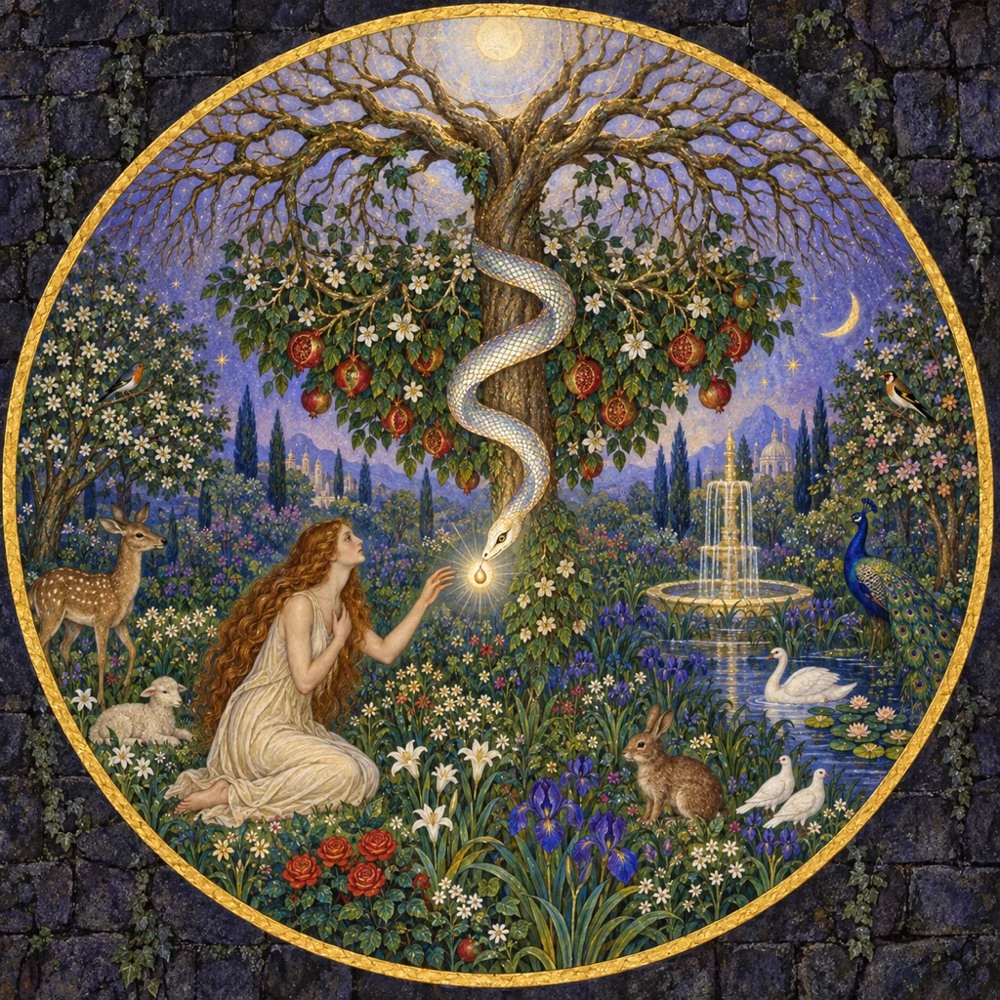
la serpiente: «la instructora»
la prohibición: «por celos»
Nag Hammadi, códice II · trad. libre (B. Layton)
el creador ocultaba el conocimiento
descripción de un adversario de esos grupos · paráfrasis
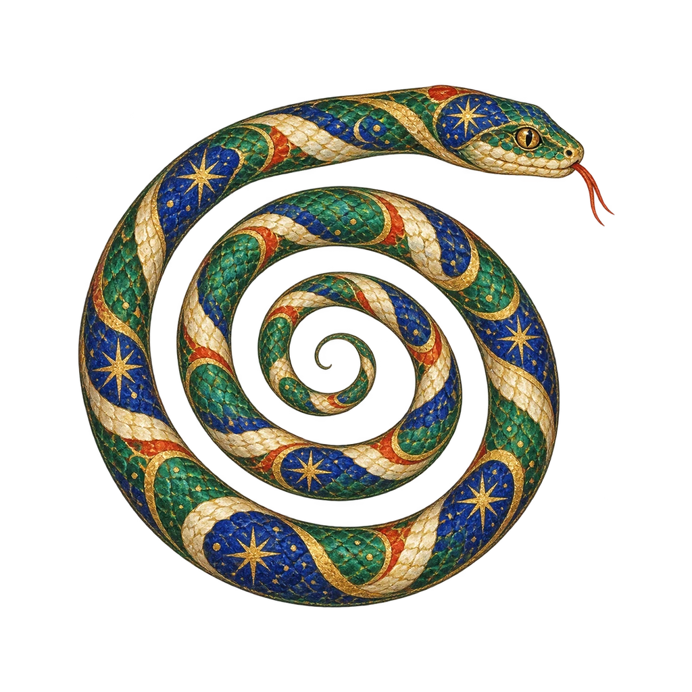
Misma escena: cambia quién parece digno de confianza.
¿Recibo mi vida de Dios… o descubro una clave que Él no me dio?
Teosofía: Blavatsky y Olcott, Nueva York, 1875 · raíces esotéricas de la Nueva Era: Jesucristo, portador del agua de la vida (Santa Sede, 2003)
No es una línea recta: es una familia de motivos.
Escucha qué promete, no sólo qué palabras usa.
No hablo de toda meditación ni de todo bienestar.
aplico un procedimiento
escucho a Alguien
¿Escucho a Alguien… o aplico una técnica para conseguir algo?
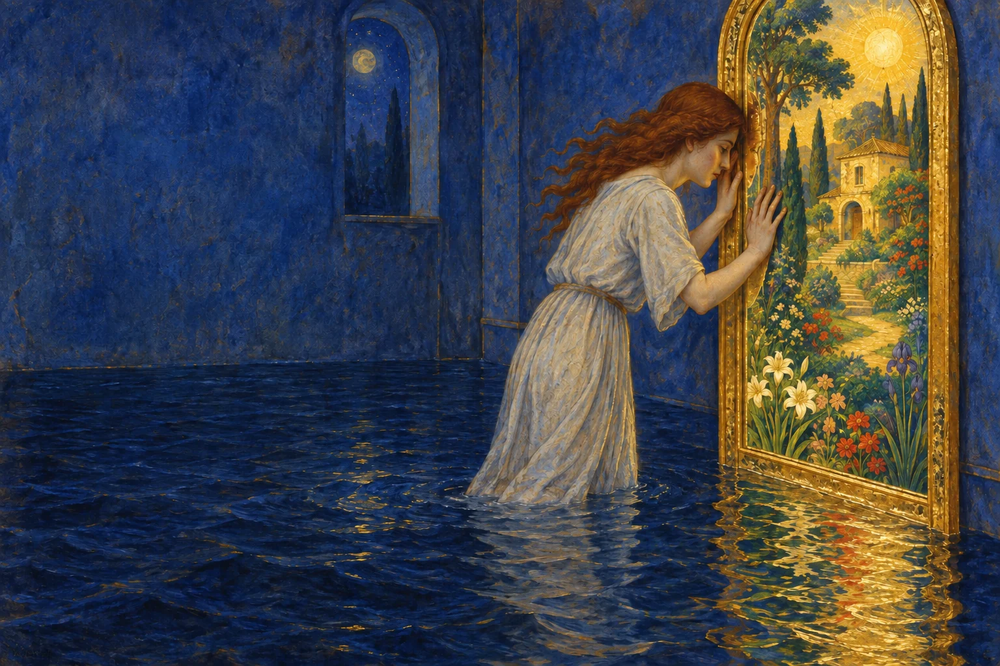
Rhonda Byrne, 2006 · la pintura es una alegoría
«Lo que piensas, lo atraes.»
«Tus pensamientos se convierten en cosas.»
Trad. libre
propuesta del autor · no comprobadavigilar cada temor por miedo a atraerlo
pensamientos → cosas
lenguaje de física cuántica
presentación editorial, no demostración
+ vocabulario religioso
Conny Méndez
¿Qué espero que produzca mi práctica interior?
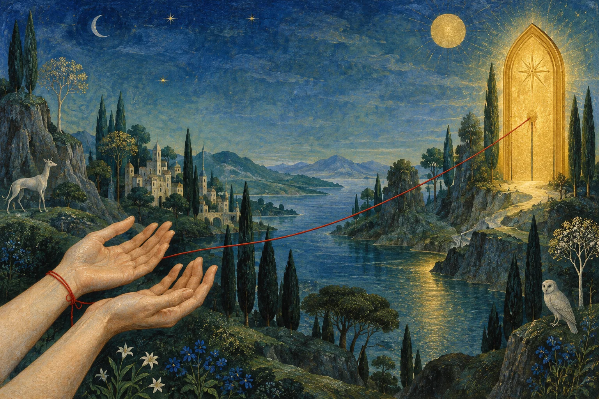
Joe Dispenza, «The Balance Between Intention and Surrender»
«ellos controlan, nosotros soltamos»
«Suelta el cómo. Conserva el resultado.»
síntesis de la tensión, no cita de Dispenza
Al soltar el método, ¿entrego también el desenlace?
¿Mi futuro… o sólo la manera de conseguirlo?
Suelto detalles… y sigo exigiendo un resultado.
«Haré todo bien y entonces Dios me dará lo que pido.»
Marcos 14,32–42
«Quedaos aquí y velad»
«espanto y angustia»
«…se alejase de él aquella hora»
La confianza empieza dentro del miedo.
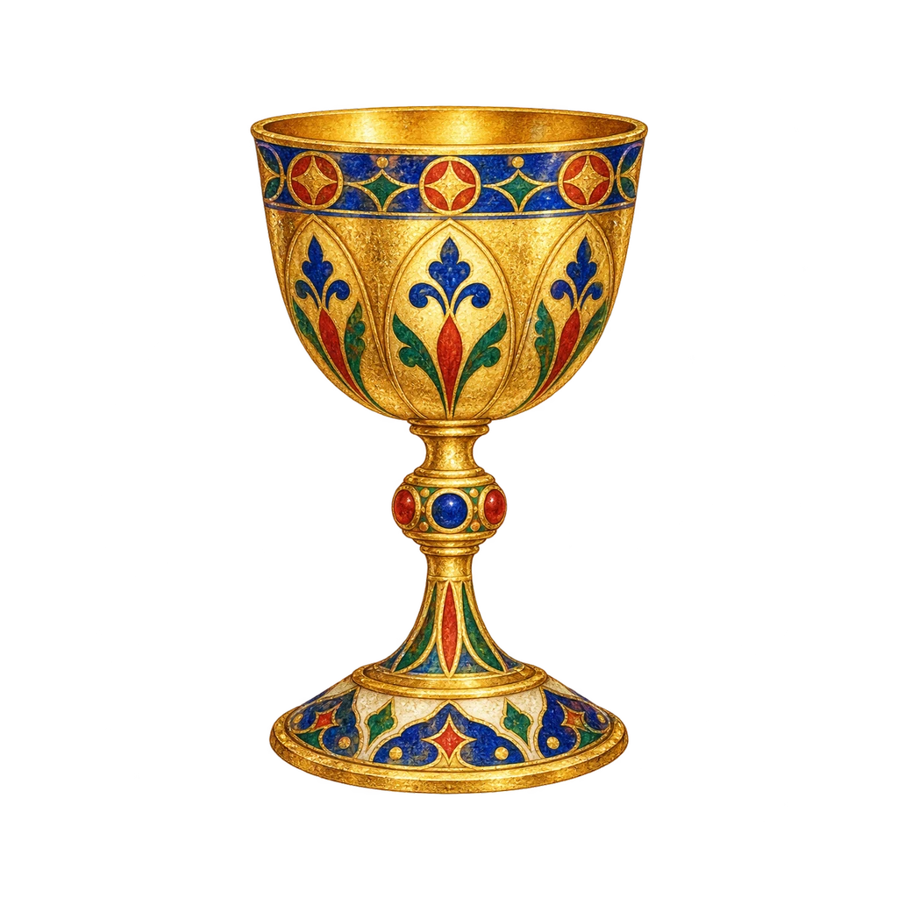
«aparta de mí este cáliz»
«no sea como yo quiero, sino como tú quieres»
Marcos 14,36
No borra el deseo: lo entrega.
«¡Levantaos, vamos!» 14,42
confiar no es quedarse inmóvil
Adán y Eva: el «no» a Dios, «cumbre de la libertad»
Jesús reconduce la voluntad humana al «sí» pleno
Benedicto XVI, Audiencia general, 1 feb 2012 · síntesis con frases textuales
La comodidad no garantiza. La angustia no descalifica.
Mi emoción no es la medida completa de mi fe.
Teresa del Niño Jesús · Carmelo de Lisieux
entra al Carmelo con 15 años
aparece sangre: la tuberculosis
alegría: se acerca el encuentro
una gran prueba de la fe
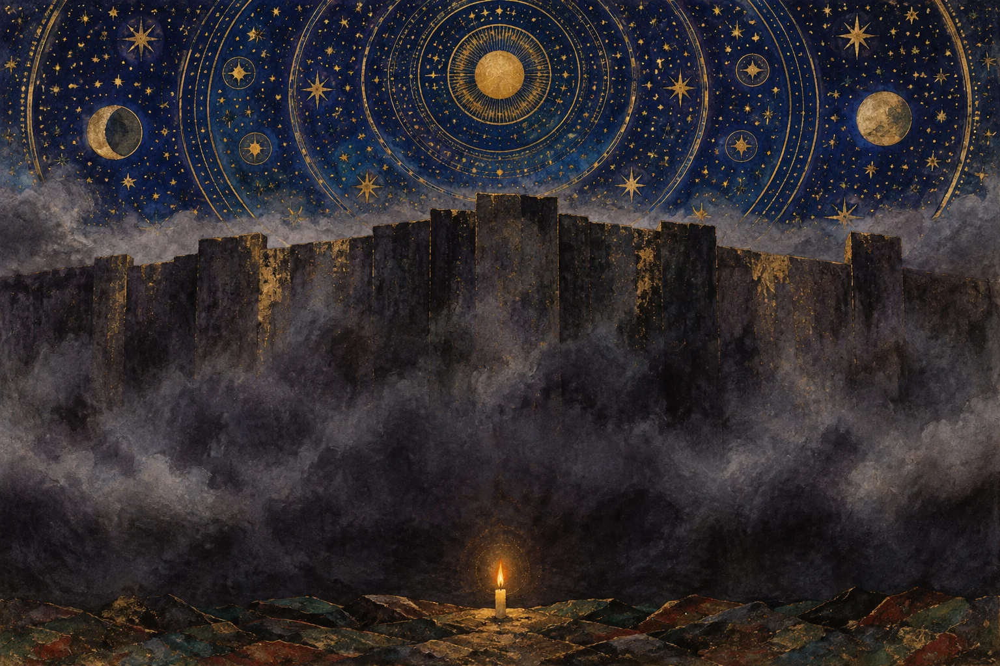
No sólo perdía la salud.
Dejaba de sentir cercano el cielo.
«las más densas tinieblas»
Manuscrito C, 5vº · citado en C’est la confiance, 25
«prueba contra la fe»
No abandonó la fe: describió un combate.
«Cuando canto la felicidad del cielo…
no experimento la menor alegría,
pues canto simplemente
lo que quiero creer.»
Manuscrito C, 7vº · citado en C’est la confiance, 42
No es una técnica para recuperar el consuelo.
Carta 197 · 17 sep 1896 · a su hermana María paráfrasis
sus grandes deseos no son el fundamento · recuerda el cáliz de Jesús
«La confianza, y nada más que la confianza, puede conducirnos al Amor.»
Carta 197 · citada en C’est la confiance, 1
No exige entusiasmo por sufrir.
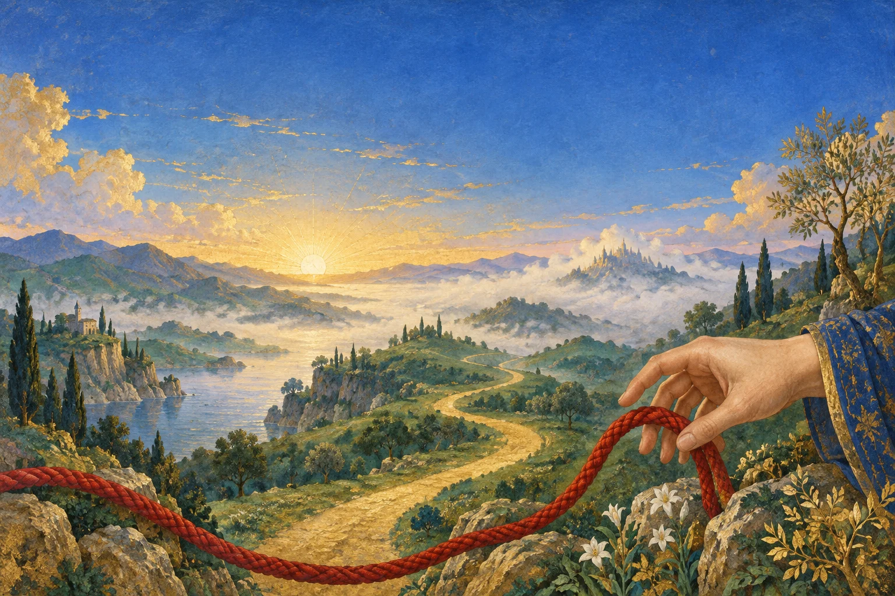
¿Algo que pido y creo que no debería negarme?
«Hágase tu voluntad»: ¿confío en su bondad… o es mi fórmula?
Confiar no es aprender la fórmula.
Es pedir, actuar… y seguir viviendo como hijo.
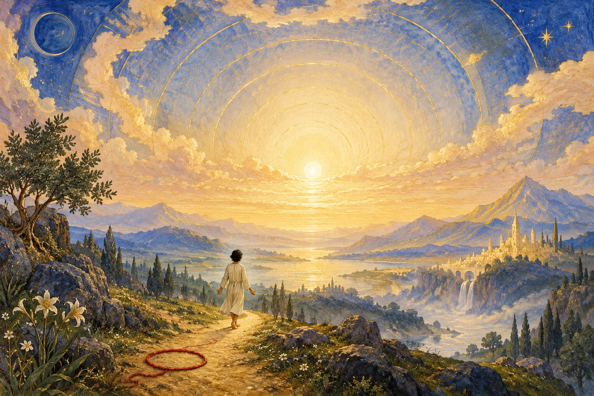
Señor, enséñame a pedir con verdad
y a confiar sin exigirte el desenlace.
Amén.